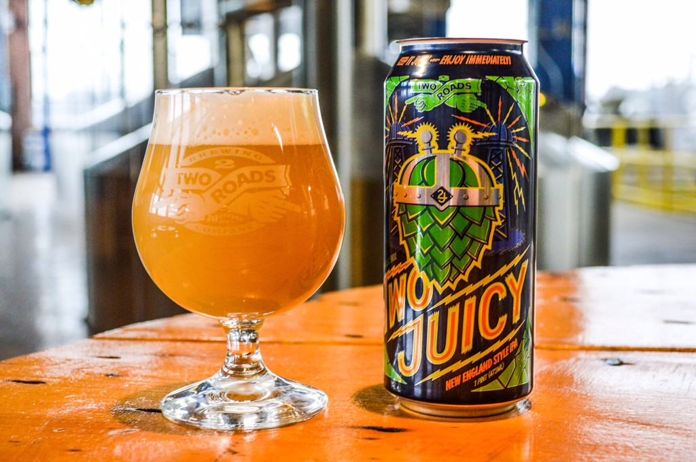

HOME
OUR PICKS
Two Juicy Double IPA
Two Roads Brewing Company
Two Juicy is an unfiltered, cloudy “New England style Double IPA” that uses generous amounts of Hallertauer Blanc, Citra & Mandarina Bavaria hops. The result is a “juicy”, fully-charged DIPA with notes of grapefruit, pine, lychee, orange & tangerine against a soft malt backdrop.
Located in Stratford, CT, Two Roads Brewing Company was founded in 2012 by four friends who dreamed for years of starting a craft brewery. They foster a “road less traveled” philosophy in the beers they make and how they make them."Life always seems to offer up two ways to go. It just so happens, we prefer the one less taken and having some fun along the way – in our lives, our careers and especially for our beers!"
Check out their site HERE 